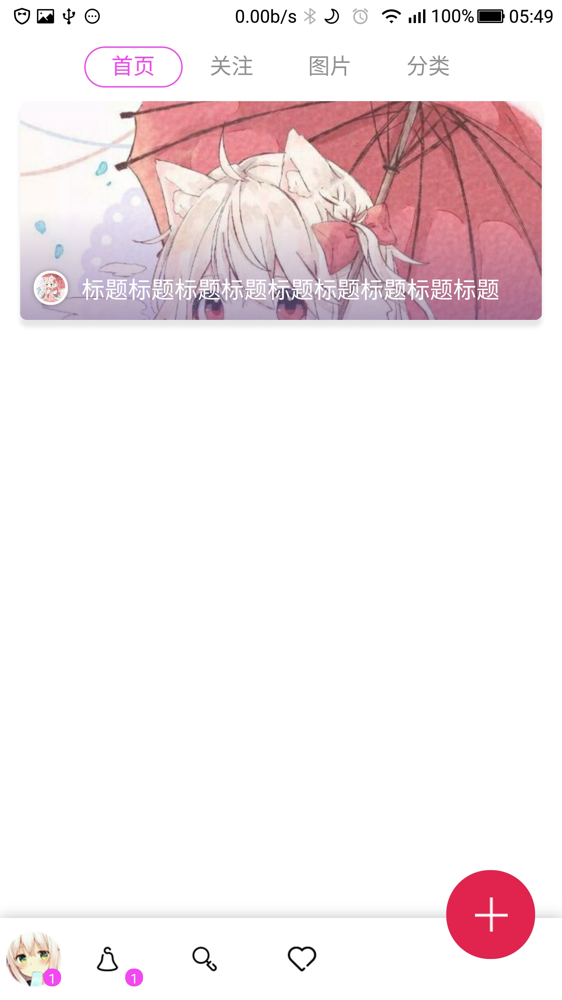

这里是js 使用的是hbx自带的mui框架 通过localStorage储存用户id 有id = 用户已经登录 无则没登陆 就不加载页面而是跳转到登录页面
//判断用户是否登录未登录直接跳转到登录页面
var user = localStorage.getItem("userid");
if (user) {
startload()
} else {
mui.plusReady(function() {
mui.openWindow({
url: 'login.html',
id: 'login',
show: {
aniShow: true
},
waiting: {
autoShow: false
}
});
});
}
function startload() {}
这里是页面的js mui.init是载入一个frame的框架引入一个页面 而我采用上下拼接的方式制作主界面 subpages是嵌套用的页面 index1 2 3 4 分别是4个页面 通过tab形式进行切换
//js部分
var subpages = ['index-1.html', 'index-2.html', 'index-3.html', 'index-4.html'];
var subpage_style = {
top: '50px',
bottom: '60px',
zindex: '0',
background: "transparent"
};
var aniShow = {};
//创建子页面，首个选项卡页面显示，其它均隐藏；
mui.plusReady(function() {
mui.init({
subpages: [{
url: 'frame.html',
id: 'frame.html',
styles: {
zindex: "99999",
width: "100%",
height: "170px",
bottom: "0px", //默认为0px，可不定义；
background: "transparent"
}
}]
});
var self = plus.webview.currentWebview();
for (var i = 0; i < 4; i++) {
var temp = {};
var sub = plus.webview.create(subpages[i], subpages[i], subpage_style);
if (i > 0) {
sub.hide();
}
/* 让新创建的webview，追加合并到当前的窗口上。合并成一个窗口。
* 目的：将父子窗口合并成一个页面，实现同开同关的效果。 避免点击返回安监室，子页面先关闭，而父页面的头部和尾部没有关闭的BUG。
*/
self.append(sub);
}
});
//当前激活选项
var activeTab = subpages[0];
//选项卡点击事件
mui('.mui-bar-tab').on('tap', 'a', function(e) {
var targetTab = this.getAttribute('href');
if (targetTab == activeTab) {
return;
}
//更换标题
//显示目标选项卡
//若为iOS平台或非首次显示，则直接显示
if (mui.os.ios || aniShow[targetTab]) {
plus.webview.show(targetTab);
plus.webview.show('frame.html');
} else {
//否则，使用fade-in动画，且保存变量
var temp = {};
temp[targetTab] = "true";
mui.extend(aniShow, temp);
plus.webview.show(targetTab, "fade-in", 300);
plus.webview.show('frame.html');
}
//隐藏当前;
plus.webview.hide(activeTab);
//更改当前活跃的选项卡
activeTab = targetTab;
});
然后创建一个主界面的frame文件用来制作嵌套部分
然后创建4个index-1.html index-2.html index-3.html index-4.html
完成版的主界面 下一次更新在继续完善功能